Create a map
We’re going to add a new page to our site with a map showing all of the carceral sites.
First, we need to assign all of the items in Omeka to the site. Every site in an Omeka S instance has a collection of items which it “knows about” and will show up in its searches and visualisations - it’s possible to configure this to automatically include new items, but by default a new site won’t have any items in it.
Here’s a diagram illustrating this from earlier: Site A can see the items in the yellow box, and Site B can see the items in the purple box.
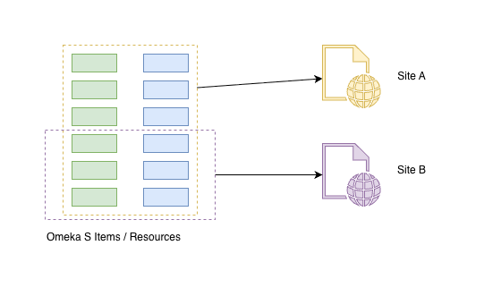
Assigning items to a site is something I always forget to do and then wonder why my map isn’t working - Omeka S won’t remind you to do it.
Click the “Resources” item in your site’s section of the left nav panel, which takes us to the Resources page for the site:
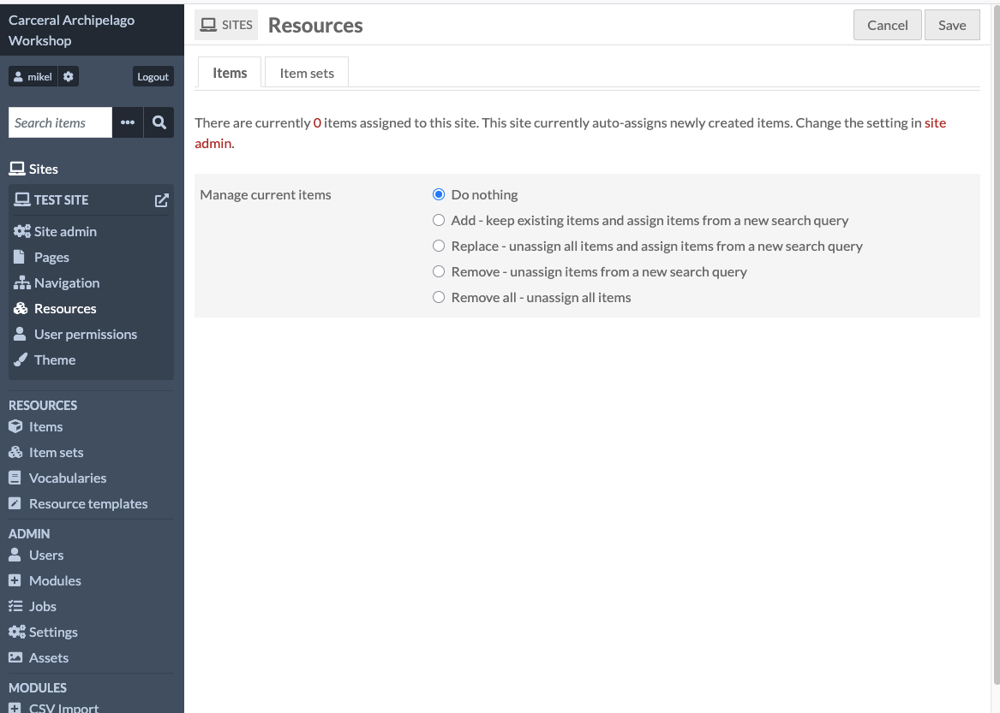
Select the second option, “Add - keep existing items and assign items from a new search query”
Underneath this is a section to define a search query, which we’d use if we only wanted to add some items to the site. We want to add everything, so we can leave the query empty.
Click “Save” to add the items to the site.
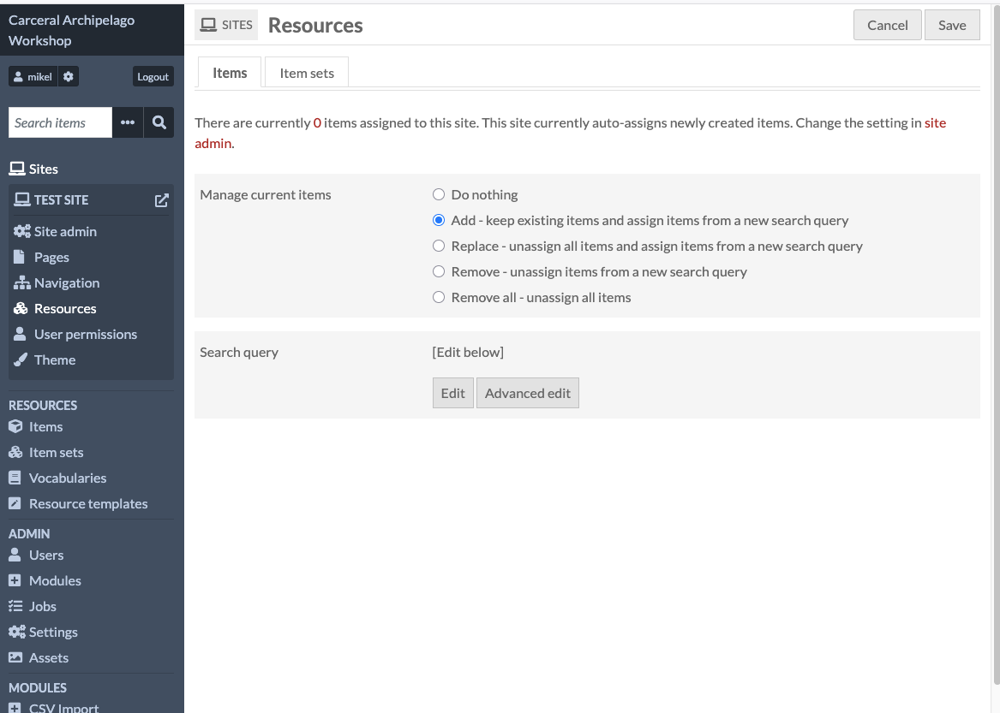
After this you should be able to click in your site’s “Resources” item on the left nav panel and see that it has items added to it:
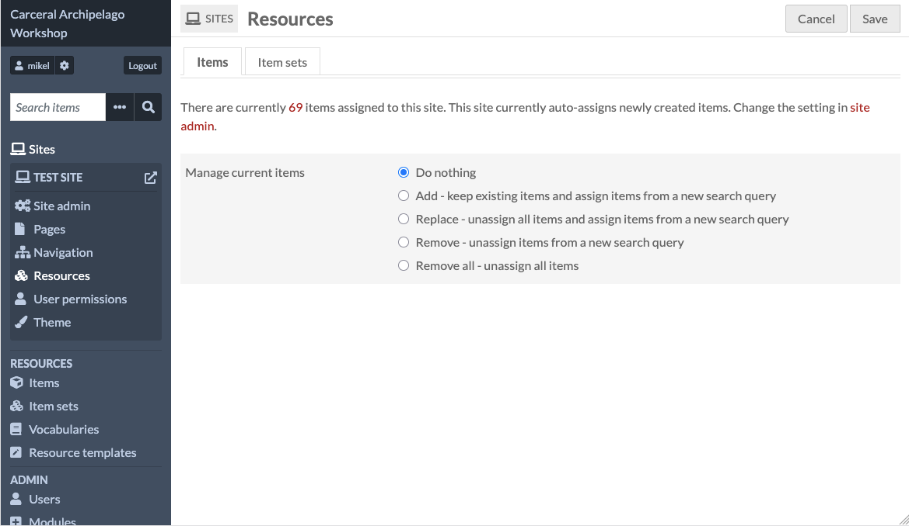
Now that the site has some items, we’re ready to put them on a map. Click Pages in the left nav panel, then click “Add new page”.
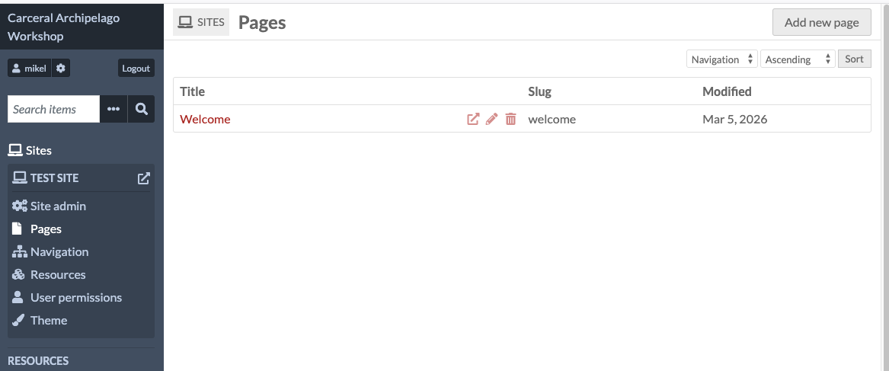
Like the site as a whole, the page needs to have a title, and the URL slug can be customised but usually will just be the title.
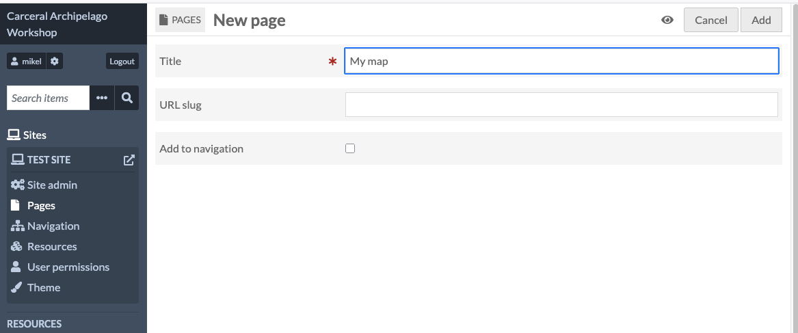
The page editor looks like this:
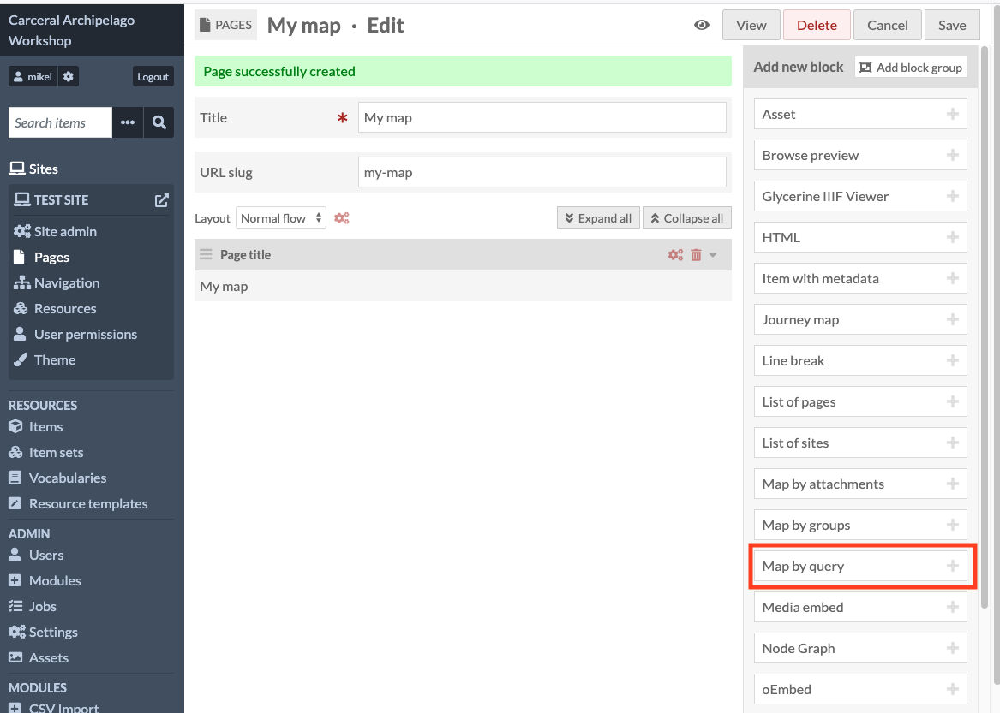
We can build up a page by adding one or more blocks - each block is like a component which provides a particular bit of web functionality in the page once it’s live. This can be something dynamic and interactive like a map or a timeline, or just some static content.
We’re going to add one block to this - “Map by query”
The “Map by query” has a lot of details in it - we can leave the defaults for now:
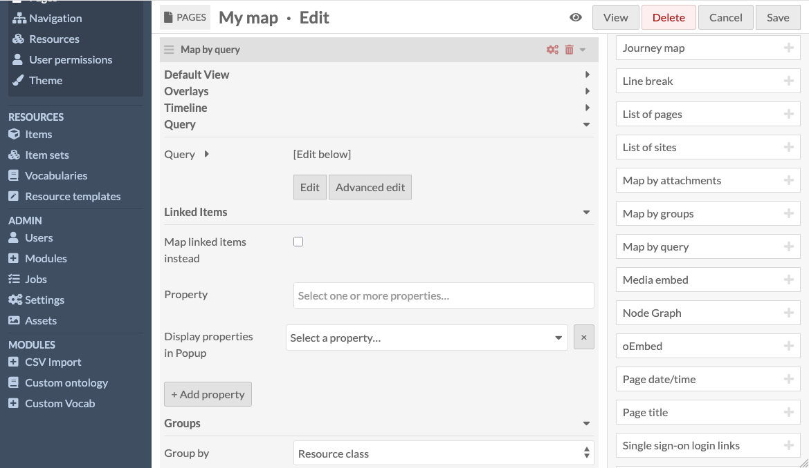
Click the “Save” button in the top left hand corner, and you should get a green message saying “Page successfully updated”:
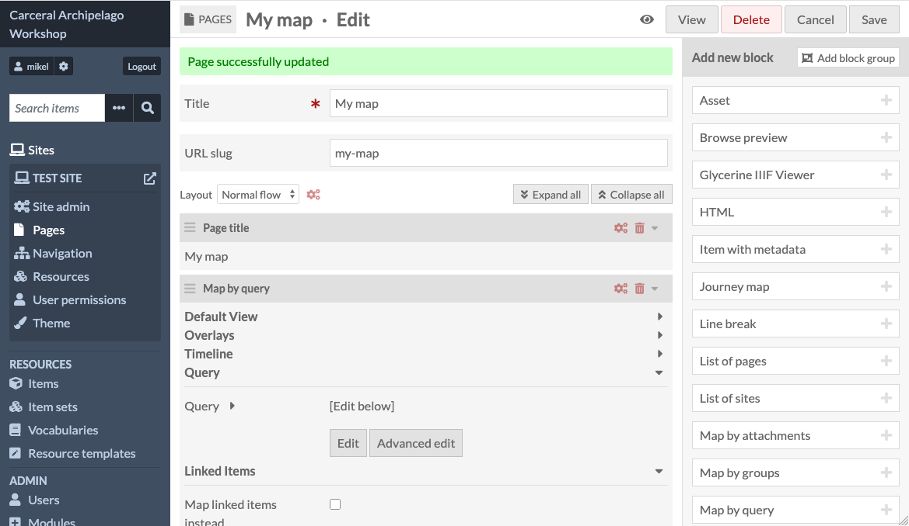
To see the new page, we can click the “View” button, which will open the page in a new browser tab:
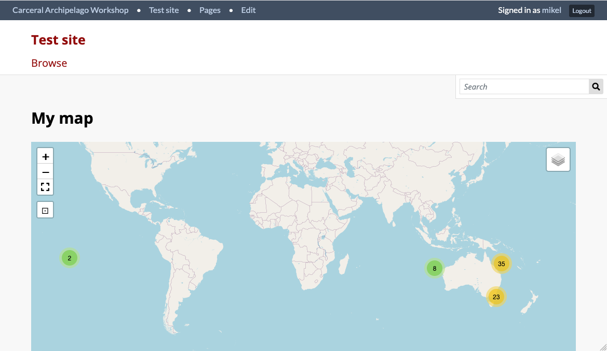
Here is a view of the map zoomed into Tasmania - we can see that Locations are being rendered as red markers and Carceral Sites as blue-green ones.
Where the mapped items are close together, the map groups them into clusters with a number showing how many items are in the cluster.
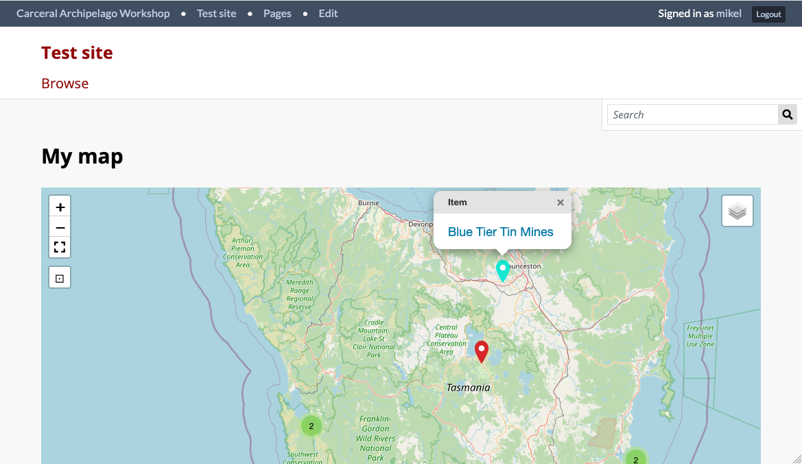
If I click on an item, it shows the name: Blue Tier Tin Mines - and if I click the link, it will open that item’s public facing page.
This isn’t very interesting, so now we’re going to configure the map to put some more information into the popups.
Go back to the admin dashboard, select your site, and edit the map you just created, and then scroll down to the “Map by query” block. Look for the field named “Display properties in Popup” - this lets you search for the properties we want to show the reader.
Unfortunately, we have to specify these by the internal, metadata-ish names, not the user-friendly labels. “Indigenous name” is using the schema.org property “alternateName”, which is what we have to search for:
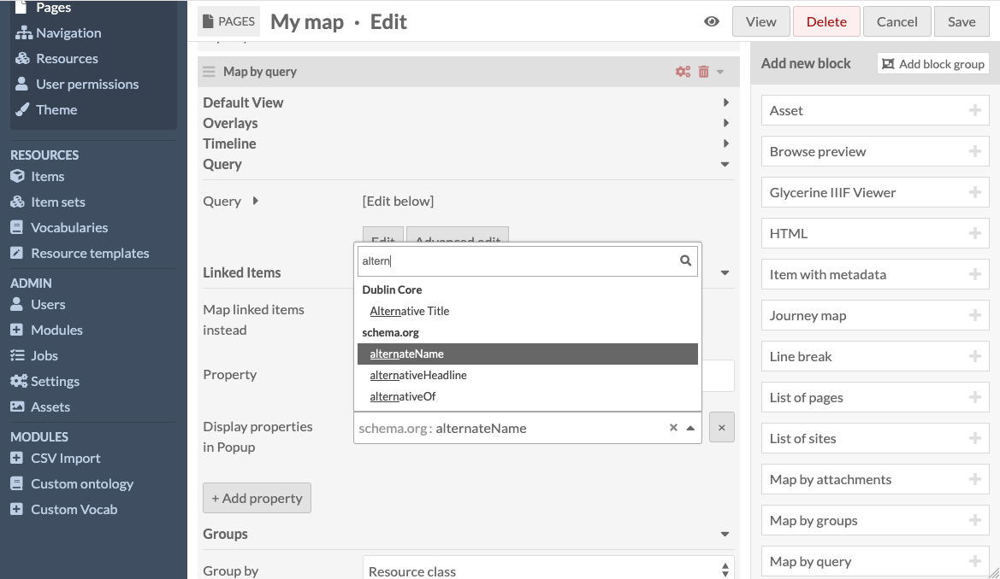
After finding alternateName, we can add more properties by clicking the “+ Add property” button and doing the same kind of search. Here I’ve added the language family, language and text properties - “text” is a schema.org property which I’ve used for the quotations.
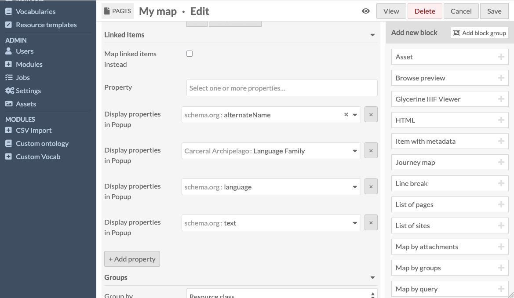
Once you’ve added some properties, click the “Save” button in the top right hand corner, and then “View” to see the updated map.
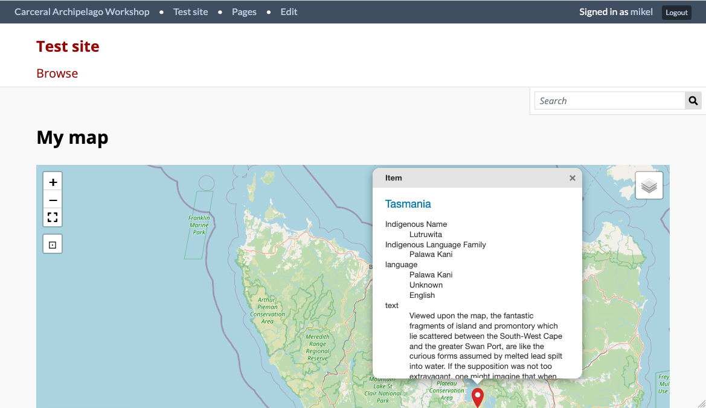
This still needs some work - the scrollbars are ugly and we need to provide a better label than “text”. Our team at SIH are scoping some development work to make the user experience less basic, but that can happen in parallel to your work on the collection.
All materials copyright Sydney Informatics Hub, University of Sydney